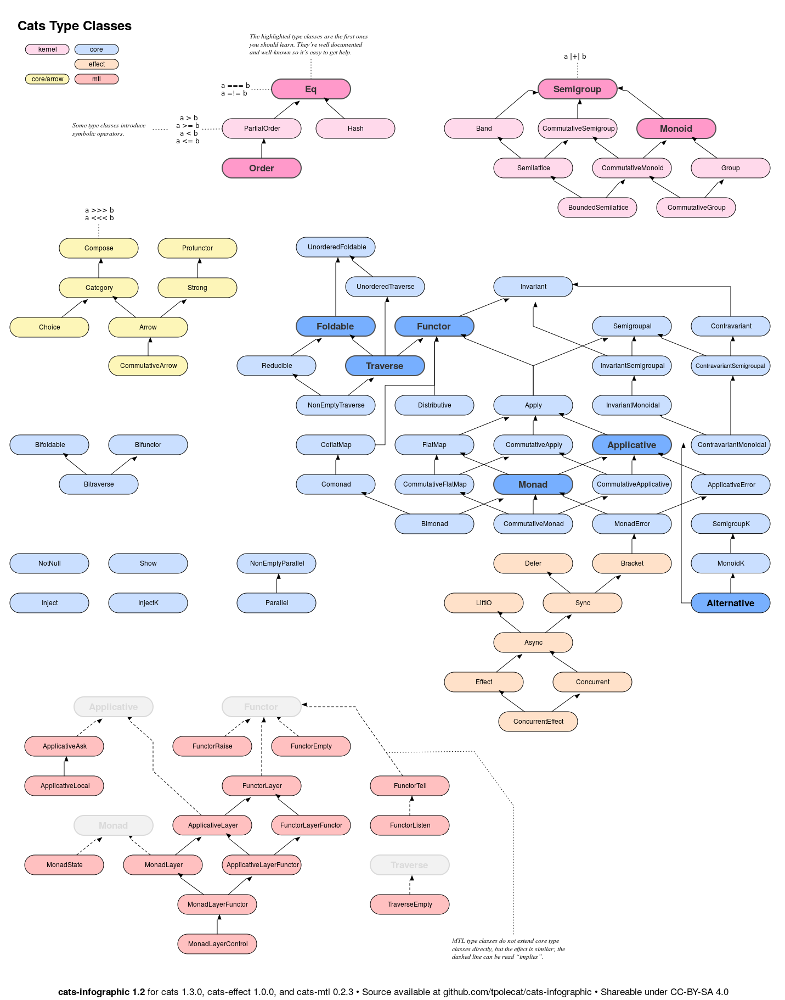
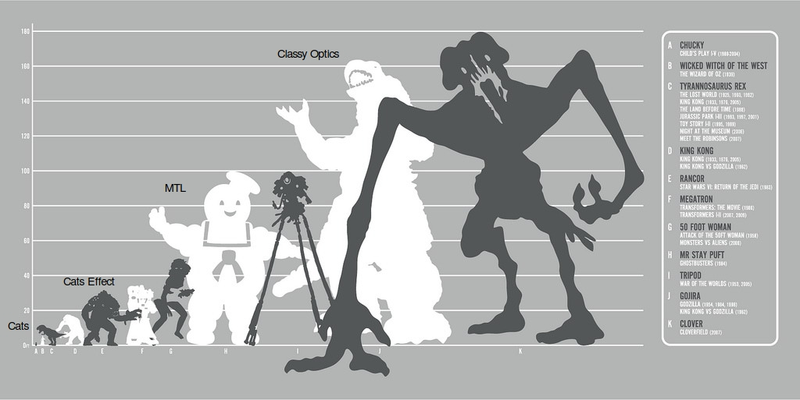

Pragmatic
object-oriented
tagless final
Purity
abstraction
and Referential Transparency
with Classes
----
## Agenda?
Part 2:
Practice
- possibly incorrect
- directly useful
notes:
- I hate agenda slides
- theory (useless but correct) vs practice(potentially both useful and incorrect + opinionated)
----
theory
Speakers read whitepapers so we don't have to
- Expression problem
- Initial vs Final Encoding
- Tagged vs Tagless Encoding
Wake up in 10 minutes
----
## Expression problem
++++
#### Expression problem
Algrebra:
- Int literal
- Negation
- Addition
Interpreters:
- Pretty printer
- Evaluator
- Optimizer
++++
### It is all about
## multiple interpretations
----
## initial vs final encoding
++++
## initial encoding
Operations as data
++++
initial encoding
Algebra
Data types
```scala
sealed trait DBOps
case class SaveUser(user: User) extends DBOps
case class FindUserById(id: String) extends DBOps
case class Transaction(ops: Seq[DBOps]) extends DBOps
```
++++
initial encoding
Expressions
Values
```scala
val findId1: DBOps = FindUserById(1)
val transaction1: DBOps =
Transaction(Seq(
SaveUser(user1),
FindUserById(user1.id)
))
```
++++
initial encoding
Interpreters
Functions
```scala
def show(exp: DBOps): String
def usedUserIds(exp: DBOps): Seq[Int]
```
++++
initial encoding
Interpreter example
```scala
def show(exp: DBOps): String = exp match {
case SaveUser(user) => s"Saving $user"
case FindUserById(id) => s"Looking for user with id $id"
case Transaction(ops) => "Executing:\n" + ops.mkString("\n")
}
```
++++
initial encoding
Interpretations
Function application
```scala
val desc: String = show(findId1)
val ids: Seq[Int] = usedUserIds(transaction1)
```
++++
## final encoding
Operations as functions
++++
final encoding
Algebra
Interface
```scala
trait DBOps[T] {
def saveUser(user: User): T
def findUserById(id: Int): T
def transaction(ops: Seq[T]): T
}
```
++++
final encoding
Expressions
Functions
```scala
def findId1[T](db: DBOps[T]): T = db.findUserById(1)
def transaction1[T](db: DBOps[T]): T =
db.transaction(Seq(
db.saveUser(user1),
db.findUserById(user1.id)
))
```
++++
final encoding
Interpreters
Interface instances
```scala
val show: DBOps[String]
val usedUserIds: DBOps[Seq[Int]]
```
potentially implicit
++++
final encoding
Interpreter example
```scala
val show: DBOps[String] = new DBOps[String] {
def saveUser(user: User): String =
s"Saving $user"
def findUserById(id: Int): String =
s"Looking for user with id $id"
def transaction(ops: Seq[String]): String =
"Executing:\n" + ops.mkString("\n")
}
```
++++
final encoding
Interpretations
Function application
```scala
val desc: String = findId1(show)
val ids: Seq[Int] = transaction1(usedUserIds)
```
++++
|
Initial |
Final |
| Algebra |
ADT |
interface |
| Expresions |
values |
functions |
| Interpreters |
functions |
values |
| Interpretations |
interpreter applied on expression |
expression executed with interpreter |
----
## tagged vs tagless encoding
++++
## tagged encoding
Result encoded as an ADT
```scala
// Result ADT
sealed trait Result
case class FindByIdResult(user: Option[User]) extends Result
case class SaveResult(id: Int) extends Result
case class TransResult(subResults: Seq[Result]) extends Result
```
++++
## tagged initial encoding
// Initial interpreter
def executeDBQuery(exp: DBOps): Result
// Initial interpretation
val r: Result = executeDBQuery(findById1)
++++
## tagged final encoding
// Final interpreter
val executeDBQuery: DBOps[Result]
// Final interpretations
val r: Result = findById1(executeDBQuery)
++++
### Working with tagged encoding
Pattern matching of result
```scala
val result: Result = findById1(executeDBQuery)
result match {
case FindByIdResult(userOpt) => ???
case _ => ???
}
```
++++
## tagless encoding
Algebra parametrized with result type
++++
## tagless initial encoding
Operations as generic data (GADT)
// Algebra
sealed trait DBOps[Result]
case class SaveUser(user: User) extends DBOps[Int]
case class FindUserById(id: Int) extends DBOps[Option[User]]
case class Transaction[HL](ops: HL) extends DBOps[HL]
// Expressions
val findId1: DBOps[Option[User]] = FindUserById(1)
val saveMyUser: DBOps[Int] = SaveUser(myUser)
++++
## tagless initial encoding
Interpreters are also parametrized
// Interpreters
def show[T](exp: DBOps[T]): String
def usedUserIds[T](exp: DBOps[T]): Seq[Int]
def executeDBQuery[T](exp: DBOps[T]): T
def executeDBQueryAsync[T](exp: DBOps[T]): Task[T]
// Interpretations
val userOpt: Task[Option[User]] = executeDBQueryAsync(findId1)
++++
## tagless final encoding
Operations as higher-kind interface
// Algebra
trait DBOps[F[_]] {
def saveUser(user: User): F[Int]
def findUserById(id: Int): F[Option[Int]]
}
// Expressions
def saveMyUser[F[_]](db: DBOps[F]): F[Int] =
db.saveUser(myUser)
def findId1[F[_]](db: DBOps[F]): F[Option[User]] =
db.findUserById(1)
++++
## tagless final encoding
Interpreters & Interpretations
// Interpreters
// type Const[T, U] = T
val show: DBOps[Const[String, ?]]
val usedUserIds: DBOps[Const[Seq[Int], ?]]
val executeDBQuery: DBOps[Id]
val executeDBQueryAsync: DBOps[Task]
// Interpretations
val userOpt: Task[Option[User]] = findId1(executeDBQueryAsync)
++++
|
Tagged |
Tagless |
| Algebra |
plain |
generic |
| Expresions |
plain |
generic |
| Interpreters |
plain |
generic |
| Interpretations |
needs to be pattern-matched |
properly typed |
++++
Tagged hides result type info inside result value.
Tagless encodes result type info in algebra signatures.
----
Practice
a.k.a stuff I made out of experience (thin air)
----
## Why would you want to use Tagless final?
++++
#### Why would you want to use Tagless final?
testability
effects tracking
context polymorphism
++++
testability
Ability to test piece of logic in separation.
```
def communicateWithTheUser[F[_]: Console](): F[Unit]
```
++++
testability
### OOP already have that!
class MyService(dao: MyDao) {}
++++
Effects tracking
Ability to know what is being invoked based on types.
```
def communicateWithTheUser[F[_]: Console](): F[Unit]
```
++++
Effects tracking
### It can lie!
def foo[F[_]]: F[Int] = {
println("BAR")
throw new RuntimeException("X")
}
++++
Context polymorphism
Ability to reuse code for different wrapper types
E.g. Future, IO, Id, Try
def doStuff[F[_]: MyTypeclass]: F[Int]
But why would you even want that?
----
Why do we need
Context polymorphism?
def doStuff[F[_]]: F[Int]
++++
Libraries vs Applications
++++
Libraries
Properties:
- highly generic
- highly reusable
- low level
Applications
Properties:
- mostly business logic
- very specific
- not reusable
Examples:
- calculate taxes
- persist user preferences
- personalize ads
Context polymorphism in applications
Most speakers are library authors with library perspectives. Don't get biased.
++++
Context polymorphism in applications
2 most important contextes:
* IO/Task/ZIO - runtime
* Id/Try - tests
++++
Context polymorphism in applications
Synchronous tests are valuable
Business logic rarely ever needs IO
There are other use cases if you're brave enough
----
### Why would you want to use
### Tagless final in Application?
* better code understandability via effects tracking
* simple and synchronous tests
* possibility to change IO
----
#### Tip 1:
## It's not for free
FP in general and Tagless Final in particular are about security .
Code security and job security, both achieved via code obfuscation .
++++
trait UnsafeApi {
def jdbcCall(): Int
}
val u: UnsafeApi = ???
import monix.eval.Task
object SimpleSafeApi {
def safeJdbcCall(): Task[Int] = Task(u.jdbcCall())
}
import cats.{Defer, MonadError}
object TFSafeApi {
def safeJdbcCall[F[_]]()(implicit
me: MonadError[F, Throwable],
d: Defer[F]): Task[Int] = {
d.defer(me.catchNonFatal(u.jdbcCall))
}
}
----
#### Tip 2:
### Use modules and interfaces
## So you can hide the implementation details
++++
2.5 ways to encode TF in Scala
++++
### Encoding 1: Functions
```scala
object Foo {
def findUser[F[_]: Monad: DBOps](id: String): F[User]
}
```
++++
### Encoding 2: Modules
```scala
class Foo[F[_]: Monad](db: DBOps[F]) {
def findUser(id: String): F[User]
}
```
++++
### Encoding 3: Object algebras
```scala
trait Foo {
type F[T]
implicit def monad: Monad[F]
def findUser(id: String): F[User]
}
```
++++
#### Tip 2: Use modules and interfaces
#### Start with the interface
trait UsersService[F[_]] {
def authenticate(login: String, pass: String): F[Option[User]]
}
++++
#### Tip 2: Use modules and interfaces
#### Implement it with a class
Use implicits for typeclasses and normal parameters for dependencies
class RealUsersService[F[_]: Monad](repo: UsersRepo[F])
extends UserService[F]
{
def authenticate(login: String, pass: String): F[Option[User]]
}
++++
#### Tip 2: Use modules and interfaces
#### Put it in a companion object
If there is only one implementation
trait UserService[F[_]] { ... }
object UserService {
class Default[F[_]](dao: UserDao[F]) extends UserService[F] {
...
}
}
++++
#### Tip 2: Use modules and interfaces
#### Check out scala-steward sources for examples
----
#### Tip 3:
### Don't go beyond Monad Error
### Unless your whole team knows what you're doing
++++
#### Tip 3: Don't go beyond Monad Error
trait UserService[F[_]] { ... }
object UserService {
class Default[F[_]: Monad](dao: UserDao[F]) extends UserService[F] {
...
}
}
++++

++++

++++
#### Tip 3: Don't go beyond Monad Error
#### Use exact type directly when things get complicated
trait UserService[F[_]] { ... }
object UserService {
class Default(dao: UserDao[Task]) extends UserService[Task] {
...
}
}
----
#### Tip 4:
### Don't use monad transformers
### In public interfaces and global context
++++
#### Tip 4: Don't use monad transformers
-
EitherT in context = global error type
-
StateT in context = global state
-
ReaderT in context = global dependencies
----
#### Tip 5:
### Use (co)variance
## Unless you have good reason not to
++++
#### Tip 5: Use (co)variance
`F[_]` will be an `IO` and every `IO` is covaraint.
class Default[F[+_]:Monad] {
...
}
----
#### Tip 6:
### Explore the possibilities
## There is always more
++++
#### Tip 5: Explore the possibilities
### Example: cats-tagless & slick
++++
#### Exploring example: cats-tagless & slick
```scala
trait Repo[F[_]]{
def getUser(id: Int): F[Option[User]]
}
```
```scala
object SlickRepo extends Repo[DBIO]{
def getUser(id: Int): DBIO[Option[Int]] =
users.filter(_.id === id).result
}
```
++++
#### Exploring example: cats-tagless & slick
```scala
import cats.tagless.autoFunctorK
@autoFunctorK
trait Repo[F[_]]{ ... }
```
```scala
def dbioToTask[Profile <: BasicProfile](
dbCfg: DatabaseConfig[Profile],
scheduler: Scheduler = Scheduler.io("db-scheduler")
): DBIO ~> Task = {
λ[DBIO ~> Task](dbio => Task.deferFuture(dbCfg.db.run(dbio))
.executeOn(scheduler))
}
```
```scala
def convert(
dbCfg: DatabaseConfig[MyProfile],
dbioRepo: Repo[DBIO]): Repo[Task] = {
import cats.tagless.syntax.all._
dbioRepo.mapK(dbioToTask(dbCfg))
}
```
----
Dont follow Haskell blindly
Use TF in libraries!
Use TF in apps... maybe
Try things out
----
## Thanks!
Wojtek Pituła - [@Krever01](https://twitter.com/Krever01)
[w.pitula.me/presentations](http://w.pitula.me/presentations/2019-09-scalaitaly/index.html)